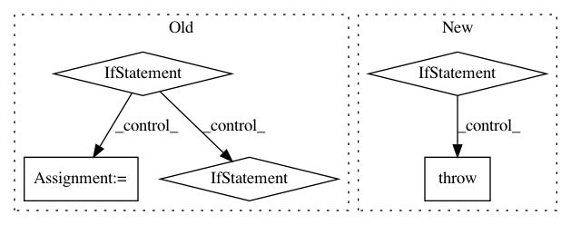

f33e7b5201494eb52360efc14dbfc7e6eeb02096,examples/mujoco_all_sac_real_nvp_hierarchy.py,,run_experiment,#Any#,191
Before Change
low_level_policy = load_low_level_policy(policy_path=low_level_policy_path)
if variant["env_name"] == "ant":
ant_env = normalize(AntEnv())
env = HierarchyProxyEnv(wrapped_env=ant_env,
low_level_policy=low_level_policy)
elif variant["env_name"] == "random-goal-swimmer":
random_goal_swimmer_env = normalize(RandomGoalSwimmerEnv(
reward_type=variant["env_reward_type"],
goal_reward_weight=variant["env_goal_reward_weight"],
goal_radius=variant["env_goal_radius"],
terminate_at_goal=variant["env_terminate_at_goal"],
))
env = HierarchyProxyEnv(wrapped_env=random_goal_swimmer_env,
low_level_policy=low_level_policy)
elif variant["env_name"] == "random-goal-ant":
random_goal_ant_env = normalize(RandomGoalAntEnv(
reward_type=variant["env_reward_type"],
goal_reward_weight=variant["env_goal_reward_weight"],
goal_radius=variant["env_goal_radius"],
terminate_at_goal=variant["env_terminate_at_goal"],
))
env = HierarchyProxyEnv(wrapped_env=random_goal_ant_env,
low_level_policy=low_level_policy)
elif variant["env_name"] == "humanoid-rllab":
humanoid_env = normalize(HumanoidEnv())
env = HierarchyProxyEnv(wrapped_env=humanoid_env,
low_level_policy=low_level_policy)
pool = SimpleReplayBuffer(
env_spec=env.spec,
max_replay_buffer_size=variant["max_pool_size"],
)
After Change
if name.startswith("env_") and name != "env_name"
}
env = normalize(EnvClass(**env_args))
elif "rllab" in variant["env_name"]:
EnvClass = RLLAB_ENVS[variant["env_name"]]
base_env = normalize(EnvClass())
env = HierarchyProxyEnv(wrapped_env=base_env,
low_level_policy=low_level_policy)
else:
raise NotImplementedError
pool = SimpleReplayBuffer(
env_spec=env.spec,
max_replay_buffer_size=variant["max_pool_size"],
In pattern: SUPERPATTERN
Frequency: 3
Non-data size: 5
Instances
Project Name: rail-berkeley/softlearning
Commit Name: f33e7b5201494eb52360efc14dbfc7e6eeb02096
Time: 2018-05-22
Author: kristian.hartikainen@gmail.com
File Name: examples/mujoco_all_sac_real_nvp_hierarchy.py
Class Name:
Method Name: run_experiment
Project Name: rail-berkeley/softlearning
Commit Name: cdf1e5890978ce2c487f3694dee26b9317592de2
Time: 2020-06-07
Author: kristian.hartikainen@gmail.com
File Name: softlearning/environments/adapters/dm_control_adapter.py
Class Name: DmControlAdapter
Method Name: __init__
Project Name: rail-berkeley/softlearning
Commit Name: 20fe7b4cbf62f6223241d6cafc6e8ea48701efdd
Time: 2018-10-22
Author: hartikainen@berkeley.edu
File Name: softlearning/misc/nn.py
Class Name:
Method Name: feedforward_model